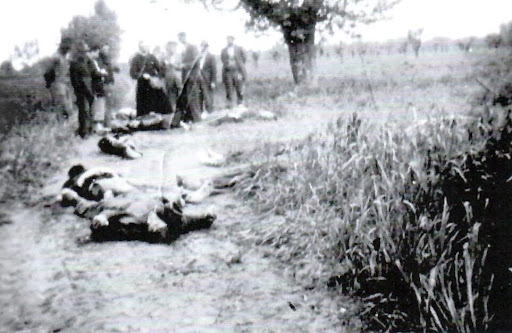
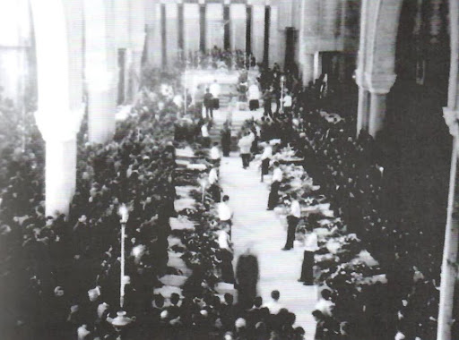

30 aprile 1945. Durante la mattinata si avverte ancora la presenza di alcuni tedeschi che hanno pernottato in città. Arrivano tristi notizie dalle frazioni, da Campretto (dalla strada del Maglio al Ponte del Maglio) si calcolano almeno 19 morti. Arriva voce di come la maggior parte di coloro che sono stati catturati dai tedeschi siano stati trucidati tra San Martino di Lupari e Godego, e l'ultima parte a Godego. Alle quattordici la città è liberata dagli alleati. Nel pomeriggio a Campagnalta, Abbazia Pisani, Sant'Anna Morosina e Godego, vengono trovati i cadaveri barbaramente uccisi dai tedeschi. Tutti questi vengono portati alla Chiesa Storica di San Martino di Lupari.
1 maggio 1945. I corpi vengono riconosciuti e si procede ad una loro sistemazione con la costruzione di bare e lenzuoli per coprirli. Vengono inoltre mostrati alle famiglie.
